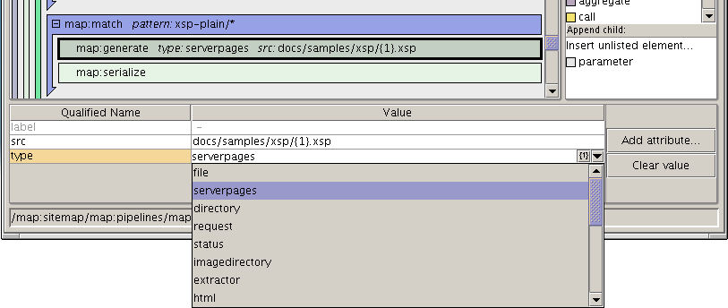
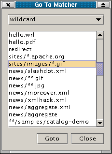

Pollo includes a customized environment for editing Cocoon Sitemap files. It consists of a custom display specification, a schema, an attribute editor plugin and action plugins.

Pollo includes a customized environment for editing Cocoon Sitemap files. It consists
of a custom display specification, a schema, an attribute editor plugin
and action plugins.
At the time of this writing, it was tailored towards Cocoon 2.02, but
it won't do any damage to sitemap files for other Cocoon versions.
The schema is responsible for letting Pollo know what elements are available, and what attributes can occur on the elements. It also defines things like selection lists for attribute values, sometimes dynamically generated. In the screenshot below, the selection list for the 'type' attribute is dynamically composed from the generators defined in the map:components section of the sitemap.
The same schema as used inside Pollo (with the same colors) is also available as a poster diagram
to stick on your wall.
To get a quick overview of all matcher patterns in a document, choose 'Plugin actions | Goto matcher ...' in the menubar. You will get a dialog like this:
Selecting a pattern and clicking 'Goto' will bring you to the location
in the document where that pattern is used.
This feature looks in the map:components section of the sitemap to know
what matcher types have been defined, what their names are, and what the default
one is. If you are editing a subsitemap which does not have these declarations
(because they are inherited from the parent sitemap), this feature will not
work. The work-around is to redefine the matchers in the subsitemap.
While entering a reference to a substitution parameter (i.e. something
between { and } ), Pollo will show a hint displaying from what component the
parameters will be substituted.
As can also be seen in the above screenshot, in the attribute editor field
there are little buttons on the right. The first one will show a file dialog
to browse for a filename which will then be inserted in the attribute value.
The second one will show a dialog with the nearest wildcard URI matcher pattern,
in which you can then click on any of the stars to insert a reference to them: